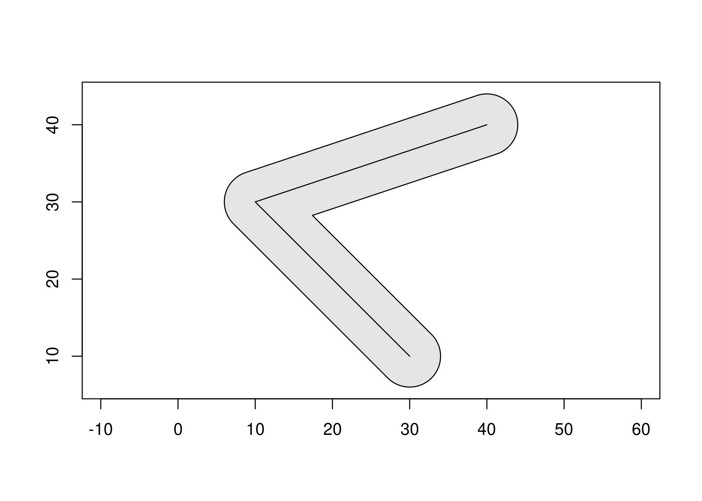

The goal of geom is to provide low-level access to the GEOS library, supporting several common input/output formats to facilitate geoprocessing in R.
Installation
You can install the development version from GitHub with:
# install.packages("devtools")
devtools::install_github("paleolimbot/geom")If you can load the package, you’re good to go!
library(geom)Example
Right now the package doesn’t do much except convert between a few useful input/output formats:
geo_convert(geo_wkt("POINT (20 10)"), geo_wkb())
#> <geo_wkb [1]>
#> <raw [21]>
tibble::as_tibble(geo_convert(geo_wkt("POINT (20 10)"), geo_tbl()))
#> # A tibble: 1 x 2
#> xy feature
#> <xy> <int>
#> 1 (20 10) 1The package can do operations from the GEOS library, returing the results in any of the supported output formats:
geo_buffer(
geo_wkt("POINT (0 0)"),
width = 0.5, quad_segs = 4,
to = geo_tbl()
)
#> <geo_tbl_polygon [17 coords, 1 features]>
#> [1] <feat `1` (5.000000e-01 0.000000e+00)>
#> [2] <feat `1` (4.619398e-01 -1.913417e-01)>
#> [3] <feat `1` (3.535534e-01 -3.535534e-01)>
#> [4] <feat `1` (1.913417e-01 -4.619398e-01)>
#> [5] <feat `1` (8.077723e-16 -5.000000e-01)>
#> [6] <feat `1` (-1.913417e-01 -4.619398e-01)>
#> [7] <feat `1` (-3.535534e-01 -3.535534e-01)>
#> [8] <feat `1` (-4.619398e-01 -1.913417e-01)>
#> [9] <feat `1` (-5.000000e-01 -1.615545e-15)>
#> [10] <feat `1` (-4.619398e-01 1.913417e-01)>
#> [11] <feat `1` (-3.535534e-01 3.535534e-01)>
#> [12] <feat `1` (-1.913417e-01 4.619398e-01)>
#> [13] <feat `1` (-2.312295e-15 5.000000e-01)>
#> [14] <feat `1` (1.913417e-01 4.619398e-01)>
#> [15] <feat `1` (3.535534e-01 3.535534e-01)>
#> [16] <feat `1` (4.619398e-01 1.913417e-01)>
#> [17] <feat `1` (5.000000e-01 0.000000e+00)>Also, the results can be plotted!
point <- geo_wkt("POINT (0 0)")
geo_plot(geo_buffer(point, width = 0.5))
geo_plot_add(point)